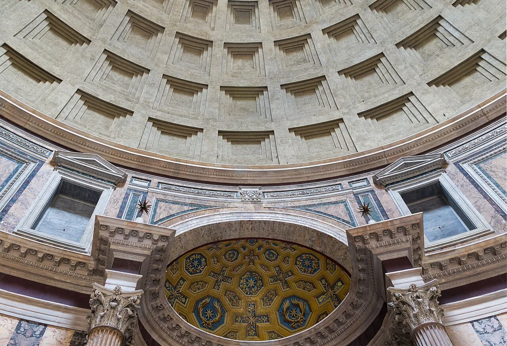
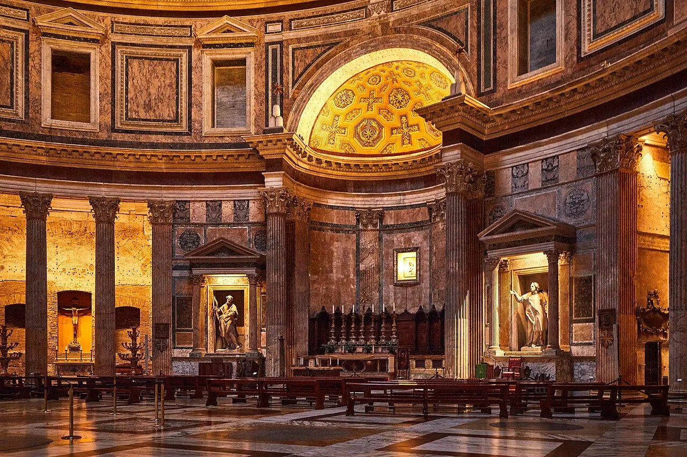
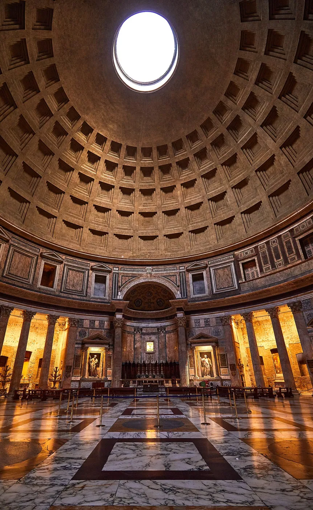
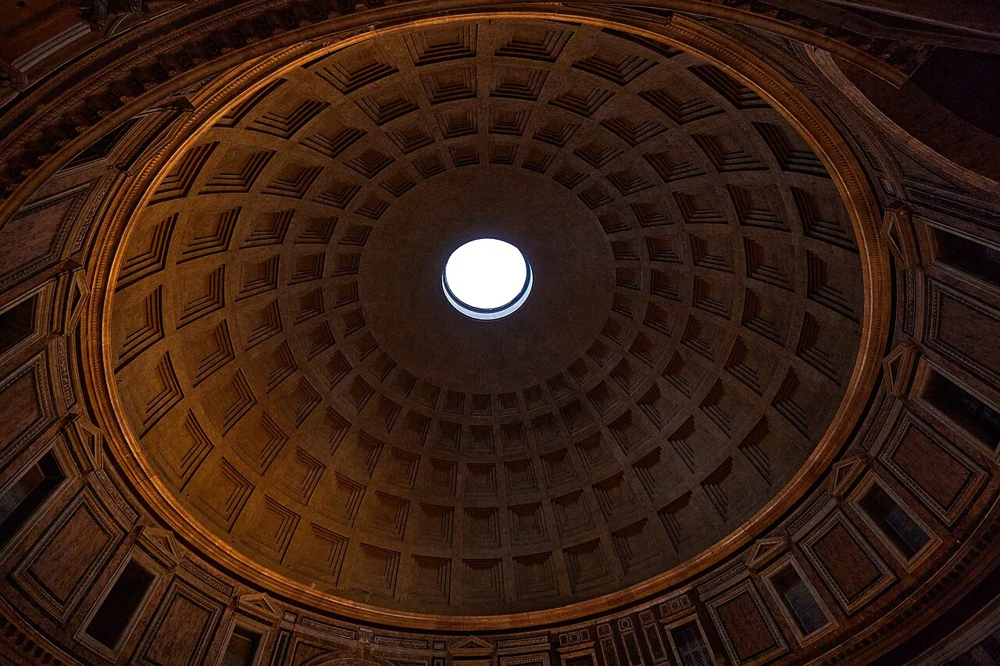
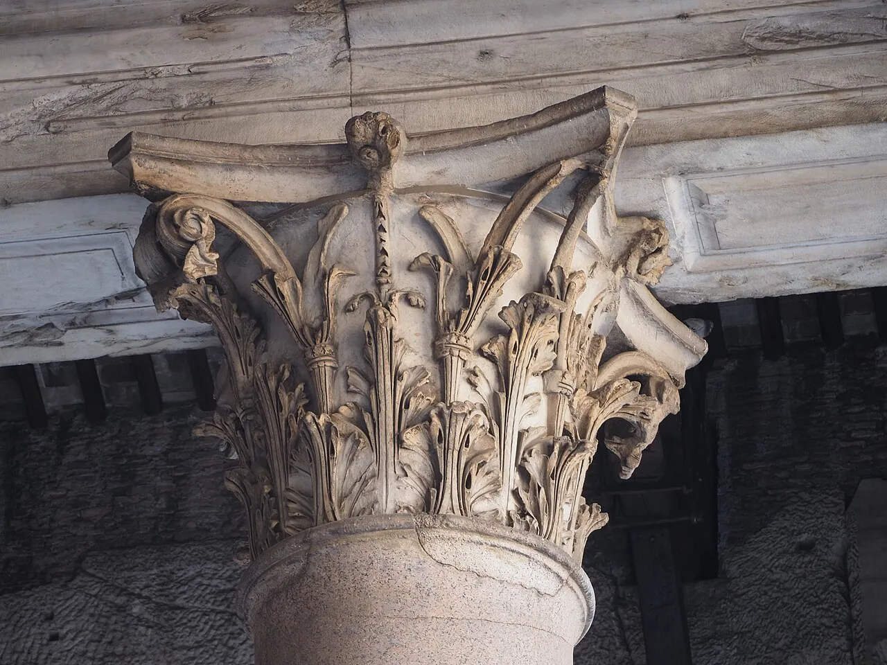
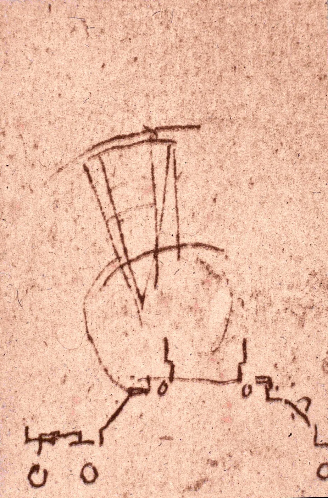

1/9 · ExteriorPhoto: Thomas_Fuhrmann_Jakobsthal · CC BY-SA 4.0 · source

2/9 · Interior · Above the main altar, choir vault of the Pantheon in Rome, ItalyPhoto: Jebulon · CC0 · source3/9 · Exterior · Portico of the Pantheon in RomePhoto: Nhartmannphotos · CC BY-SA 4.0 · source

4/9 · InteriorPhoto: Thomas_Fuhrmann_Jakobsthal · CC BY-SA 4.0 · source

5/9 · InteriorPhoto: Thomas_Fuhrmann_Jakobsthal · CC BY-SA 4.0 · source

6/9 · InteriorPhoto: Thomas_Fuhrmann_Jakobsthal · CC BY-SA 4.0 · source7/9 · InteriorPhoto: C messier · CC BY-SA 4.0 · source

8/9 · DetailPhoto: C messier · CC BY-SA 4.0 · source

9/9 · Plan · Roma, Disegno con Oculo del Pantheon di APhoto: Antonio da Sangallo the Younger · Public domain · source